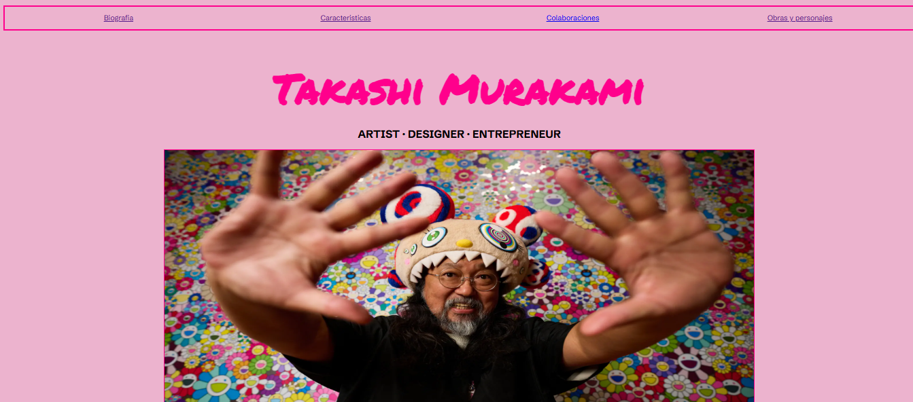

Considero que una de las habilidades que más tengo es el pensamiento divergente y la creatividad. Me gusta buscar diferentes formas de hacer las cosas y no quedarme solamente con la primera idea que aparece. Cuando hago un trabajo, muchas veces pienso en cómo puedo hacerlo más original, diferente o que represente mejor lo que quiero transmitir. Una evidencia de esto es el proyecto que hice sobre Takashi Murakami. Además de investigar sobre el artista, pensé cómo podía organizar la información en diferentes páginas y cómo presentarla de una manera visual y llamativa. También busqué diferentes formas de organizar los colores, las imágenes, las cajas y los links para que la página no fuera solamente informativa, sino que también tuviera un diseño relacionado con el estilo de Murakami.
Volver a las habilidades© 2026 - Mi Portfolio